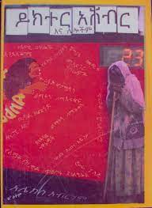
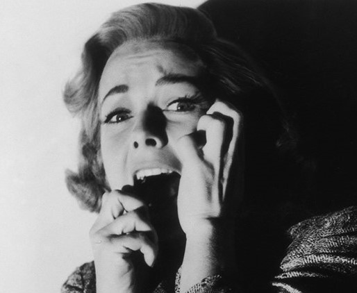

A little about selamawit
Public speaking
I know nervousness is normal. but knowing my audience and the purpose I have to spoken is the key to build my ability of speaking in front of many people with self confidence and esteem
In speaking I let my whole inner personality take control of me and I managed to speak every thing in my mind with humor and effective language.
 Sport
Sport
Participating in different sport activities is one of my hobbies.i usually do different simple morning exercises for enjoyment as well as to keep my health.Table tennis is my favourite game to play.

Fictions
Fictions are my favourite books to read.It has been maligned for centuries as being "false," "untrue," yet good fiction provides
more truth about the world, about life, and even about the reader, than can be found in non-fiction.
"Dr.Ashebr"is the best fiction i have ever read.

Frogs
Frogs are my biggest fear since i was a child.I have an extreme shock when dealing with them. And I triggered Ranidaphobia which is an exaggerated
fear of Frogs.